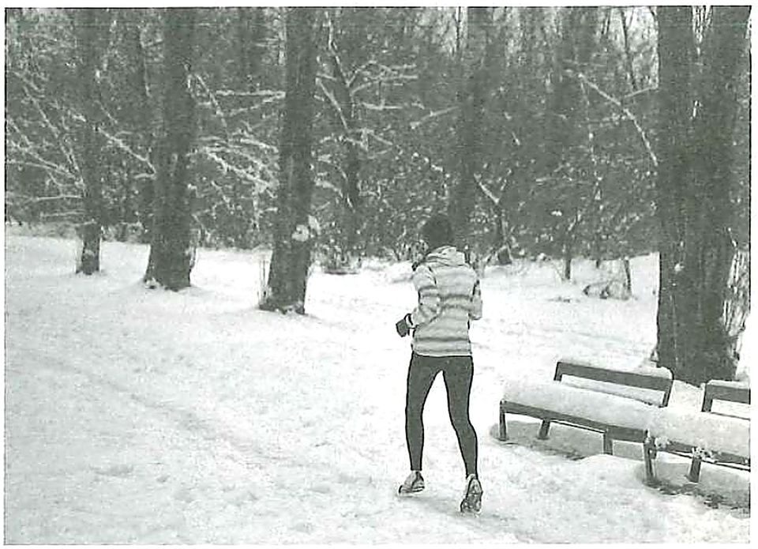

Lộ trình tự học TOEIC của cô Ngọc Huyền cho người mất gốc: đi từng bước trên bản đồ đầm sen, mỗi bước có bài ngữ pháp, nghe, đọc và từ vựng, giải thích tiếng Việt từng câu.
Nhiều bạn học TOEIC mãi không lên điểm vì hổng nền: chia động từ sai, nghe số đếm không ra, đọc email chậm. Lấp Gốc đi lại từ nền móng, mỗi tuần lấp vài lỗ hổng.
Học xong cả lộ trình, em đủ nền để tự luyện đề và hướng tới 500+.
Mỗi chặng 8 checkpoint, kết thúc bằng một bài kiểm tra. Có bài kiểm tra đầu vào để biết nên bắt đầu từ đâu.
Danh từ, lượng từ, đại từ, hoà hợp chủ ngữ – động từ. Nghe số, giờ, nối âm.
CP 01 – 08Câu điều kiện, giả định, phrasal verbs, collocations. Nghe ngữ điệu, số liệu tăng – giảm.
CP 09 – 16Đảo ngữ, cụm danh từ, từ học thuật. Nghe thông báo sân bay, nghe chép, shadowing.
CP 17 – 247 mini đề trộn ngữ pháp – nghe – đọc, tổng ôn và tự đánh giá.
CP 25 – 32Đi từng lá sen, biết rõ mình đang ở đâu, còn bao xa tới đích.
274 từ theo chủ đề, thẻ lật, kiểm tra nhanh 5 câu.
Câu làm sai tự vào sổ để ôn lại, làm đúng thì tự rời sổ.
14 bộ từ vựng hội thoại Part 3 và 9 đề Part 5 ETS 2024 có giải thích.
Mục tiêu mỗi ngày, huy hiệu chuồn chuồn và bông sen cho từng chặng.
Thêm vào màn hình điện thoại, có chế độ tối "đầm sen về đêm".
3 phần lấy từ bài thật của Lấp Gốc. Không cần đăng nhập.

Chạm vào thẻ để lật xem nghĩa. Chạm 🔊 để nghe.
Mỗi checkpoint khoảng 45–60 phút. Học đều 4–5 checkpoint mỗi tuần thì khoảng 2 tháng xong lộ trình.
Được. Lấp Gốc chạy trên điện thoại, máy tính bảng và máy tính, còn cài được như app trên màn hình chính.
Có. Bài kiểm tra 15 phút giúp em biết nên bắt đầu từ chặng nào, khỏi học lại phần đã vững.
Bấm "Vào học", đăng nhập bằng Gmail của em là học được ngay. Tiến độ gắn với Gmail đó, đổi máy vẫn học tiếp.